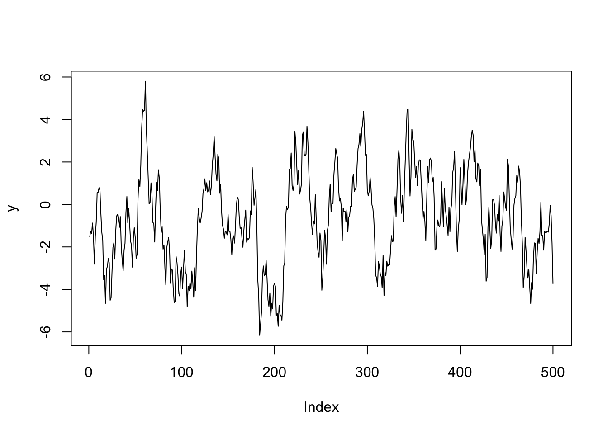

13 Fitting the model
To estimate parameters from the regression model, we will consider the iris dataset and let \(y\) be the Petal.Width variable and \(x\) be the Petal.Length variable in R. The data with the fitted regression line using the lm function is shown below.
data(iris)
library(ggplot2)
ggplot(iris, aes(x=Petal.Length, y=Petal.Width)) + stat_smooth(method="lm") +
geom_point()
To start, we setup the variables and define default values for the prior constants.
y <- iris$Petal.Width
x <- iris$Petal.Length
## these are the prior choices.
## We will talk later about how to choose prior distributions and values later
mu_mu <- 0
sigma2_mu <- 10000
mu_beta <- 0
sigma2_beta <- 10000
alpha_0 <- 0.01
beta_0 <- 0.01Next, we define empty vectors to store the MCMC output. We will run the MCMC sampler for \(K=5000\) iterations.
The MCMC algorithm works by cycling through the marginal posterior distributions. The algorithm is called a Gibbs Sampler and we sample from in sequential order.
In R, the Gibbs sampler is
set.seed(101)
## initialize
mu[1] <- rnorm(1, mu_mu, sqrt(sigma2_mu))
beta[1] <- rnorm(1, mu_beta, sqrt(sigma2_beta))
## note that sampling from an inverse gamma is the same as
## the inverse of a random gamma variable
sigma2[1] <- 1 / rgamma(1, alpha_0, beta_0)
## calculate the sample size
N <- length(y)
for (k in 2:K) {
## sample mu
a_mu <- N / sigma2[k-1] + 1 / sigma2_mu
b_mu <- sum(y - x * beta[k-1]) / sigma2[k-1] + mu_mu / sigma2_mu
mu[k] <- rnorm(1, b_mu / a_mu, sqrt(1 / a_mu))
## sample beta
a_beta <- sum(x^2) / sigma2[k-1] + 1 / sigma2_beta
b_beta <- sum(x*(y - mu[k])) / sigma2[k-1] + mu_beta / sigma2_beta
beta[k] <- rnorm(1, b_beta / a_beta, sqrt(1 / a_beta))
## sample sigma2
sigma2[k] <- 1 / rgamma(1, alpha_0 + N/2,
beta_0 + 1/2 * sum((y - (mu[k] + x * beta[k]))^2))
}To visualize the MCMC samples, we can plot what are called trace plots
samples <- c(mu, beta, sigma2)
library(ggplot2)
df <- data.frame(
sample = 1:K,
params = factor(c(rep("mu", K), rep("beta", K), rep("sigma2", K))),
values = samples)
ggplot(df, aes(x=sample, y=values, group=params)) + geom_line() +
facet_wrap(~params, scales="free", ncol=1)
The plotting window is strongly influenced by the initial condition. Instead, we can throw away the first 1000 samples (called burn-in) and examine the remaining 4000 samples for each parameter.
burnin <- 1000
## subset the samples to only post-burnin
samples <- cbind(mu[-c(1:burnin)], beta[-c(1:burnin)], sigma2[-c(1:burnin)])
colnames(samples) <- c("mu", "beta", "sigma2")
df <- data.frame(
sample = (burnin+1):K,
params = factor(c(rep("mu", K-burnin), rep("beta", K-burnin),
rep("sigma2", K-burnin))),
values = c(samples))
## fit the linear model using the MLE
fit <- lm(y~x)
df_lm <- data.frame(
params = factor(c("mu", "beta", "sigma2")),
values = c(fit$coefficients[1], fit$coefficients[2], summary(fit)$sigma^2),
row.names = NULL)
ggplot(df, aes(x=sample, y=values, group=params)) + geom_line() +
facet_wrap(~params, scales="free", ncol=1) +
geom_hline(data=df_lm, aes(yintercept=values, group=params), col="red")
We can think of each of the \(k\) iterations as a time step and can use methods from time series to examine the estimates. For example, the ACF for each parameter is
layout(matrix(1:6, 3, 2, byrow=TRUE))
acf(samples[,"mu"])
pacf(samples[, "mu"])
acf(samples[,"beta"])
pacf(samples[, "beta"])
acf(samples[,"sigma2"])
pacf(samples[, "sigma2"])
We can also ask what is the effective sample size from our estimates (the equivalent sample size of uncorrelated samples)
## mu beta sigma2
## 449.7 427.7 4000.0Because the samples of \(\mu\), \(\beta\), and \(\sigma^2\) obtained from the Gibbs sampler are from probability distributions, we can calculate any quantity of interest directly. For example, the estimate for the mean of the parameters is simply the mean of the MCMC samples
## mu beta sigma2
## -0.36411 0.41601 0.04331
## mu beta sigma2
## 0.040486 0.009816 0.005055
## mu beta sigma2
## 2.5% -0.4438 0.3972 0.03459
## 97.5% -0.2859 0.4357 0.05456and we can compare these estimates to those from the MLE
##
## Call:
## lm(formula = y ~ x)
##
## Residuals:
## Min 1Q Median 3Q Max
## -0.565 -0.124 -0.019 0.133 0.643
##
## Coefficients:
## Estimate Std. Error t value Pr(>|t|)
## (Intercept) -0.36308 0.03976 -9.13 4.7e-16 ***
## x 0.41576 0.00958 43.39 < 2e-16 ***
## ---
## Signif. codes:
## 0 '***' 0.001 '**' 0.01 '*' 0.05 '.' 0.1 ' ' 1
##
## Residual standard error: 0.206 on 148 degrees of freedom
## Multiple R-squared: 0.927, Adjusted R-squared: 0.927
## F-statistic: 1.88e+03 on 1 and 148 DF, p-value: <2e-16and the 95% credible interval for each parameter is simply the 2.5% and 97.5% quantiles of the samples.
## mu beta sigma2
## 2.5% -0.4438 0.3972 0.03459
## 97.5% -0.2859 0.4357 0.05456We can compare these to the esimates from the MLE
## 2.5 % 97.5 %
## (Intercept) -0.4417 -0.2845
## x 0.3968 0.434713.0.1 General recommendations for writing MCMC software
- Have the first dimension of each object be the number of MCMC samples
- Start with simple models and build sequentially to the complex model of interest
- Example: For spatio-temporal models, first start with linear regression, then add spatial component, then add spatio-temporal model
- Find a workflow that works
- State the model
- Calculate the full conditional distributions
- Write the MCMC using a template